바닥·벽 재질 M1~M5 · 레벨별 마감
A 파스텔 · 재질 단계는 층이 느는 레벨(6·10·14·18)에 바뀐다 · 같은 단계 안의 변형(Lv.8 원목 등)은 레벨표 2-2절대로
재질 단계 대표 (stage-m1~5)
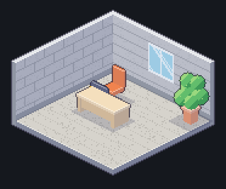
M1 콘크리트 · 시멘트 블록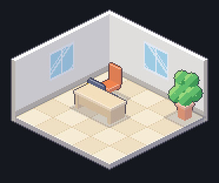
M2 타일 · 흰 페인트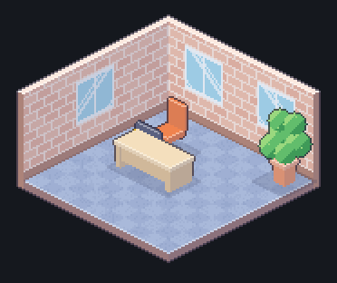
M3 카펫 타일 · 벽돌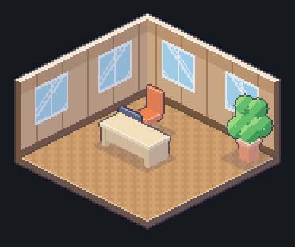
M4 헤링본 마루 · 목재 패널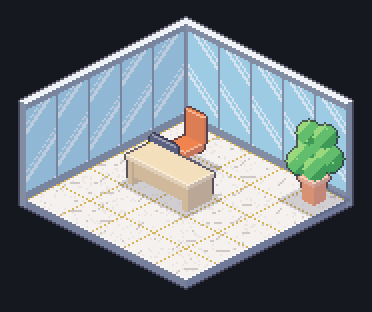
M5 대리석 + 금장 줄눈 · 통유리레벨별 마감 (finish-lv*)
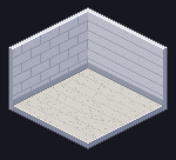
Lv.1 M1 · 콘크리트 · 시멘트 블록 · 창 0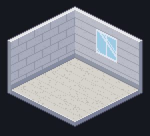
Lv.2 M1 · 콘크리트 · 시멘트 블록 · 창 1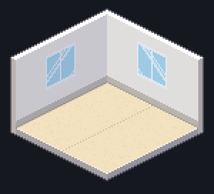
Lv.3 M2 · 장판 · 흰 페인트 · 창 2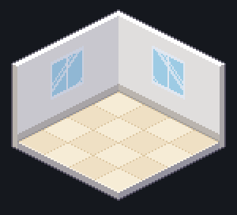
Lv.4 M2 · 타일 · 흰 페인트 · 창 2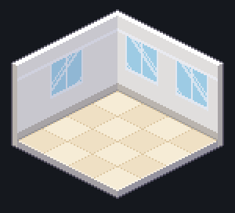
Lv.5 M2 · 타일 · 흰 페인트 + 몰딩 · 창 3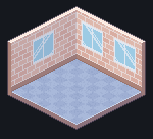
Lv.6 M3 · 카펫 타일 · 벽돌 · 창 3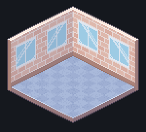
Lv.7 M3 · 카펫 타일 · 벽돌 · 창 4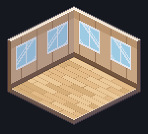
Lv.8~9 M3 · 원목 마루 · 목재 패널 · 창 4Lv.10~11 M4 · 원목 마루 · 루버 · 창 5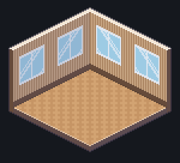
Lv.12~13 M4 · 헤링본 마루 · 루버 · 창 6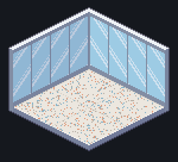
Lv.14~17 M5 · 테라조 · 통유리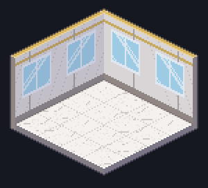
Lv.18~19 M5 · 대리석 · 대리석 패널 · 창 6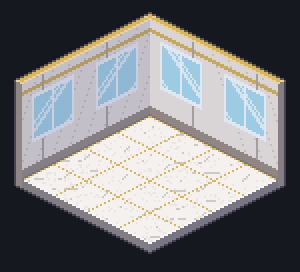
Lv.20 M5 · 대리석 + 금장 줄눈 · 대리석 패널 · 창 6